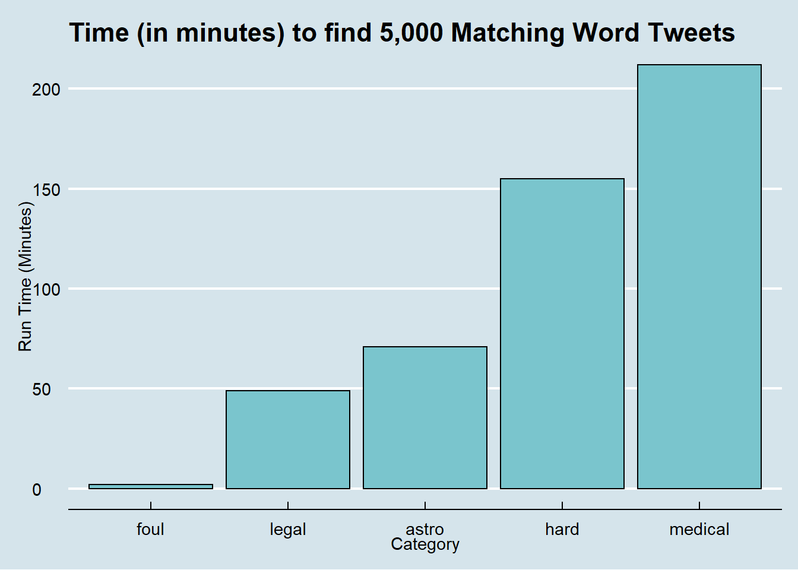

Twitter Visualizer
2021-04-12
Chapter 1 Introduction
Twitter is an accessible online source of people’s thoughts and interactions. The question we set out to anser is the following:
-Does the usage of certain tweet words indicate a typical type of Twitter user?
For example, do users who use foul language in tweets tend to be low-quality? Or, do users who employ a harder or specialized vocabulary in tweets tend to be of higher-quality. “Quality” here is defined as follows:
- Verified (verified is better due to stringent criteria by Twitter)
- Following/Follower ratio (lower is better)
- Account Creation Date (earlier is better)
- Profile Picture (non-default is better)
- Favorites Count (lower is usually better)
Using the above criteria, we set out to explore data from Twitter using filtered real-time streams (see: Twitter API Doc. Filtered streams allow an application developer to filter real-time tweets based on the presence of one or more selected words.
To collect tweets of interest, we constructed the five word lists below:
- Foul (a list of “foul” words typically not typically used in polite company)
- Legal (a list of words used in the legal industry, e.g. “verdict”)
- Astro (a list of words in the astrophysics/scientific community, e.g. “asteroid”)
- Hard (a list of vocabulary words that are usually used by people with a higher level of education, e.g. “obstreperous”)
- Medical (a list of words in the medical establishment, e.g. “intravenous”)
To collect the streamed data, a special data collector/parser program was developed in C# and .NET. This program allowed us to do the following:
- Collect data on each word list in threaded fashion, i.e. the data collection was run in parallel using multiple threads and multiple Twitter credentials. This was important as capturing a desired number of tweets for each word lists varied greatly in run times.
- Retry on the many Twitter API disconnects that are expected in the course of development.
- Filter out the many false positive matches delivered by the stream API (for example, on non-English tweet matches)
- Parse data into JSON format in preparation for importing into an R tibble.

It should be noted that we initially attempted to do this data collection through two R packages (rtweet and twitteR) but these were useful for simple testing only, not larger scale data collection tasks with retries.
Our program, TwitDownloader relied on a very powerful .NET library that wraps the Twitter API (see: tweetinvi and specifically: Filtered Streams)
A sample output session from TwitDownloader trying to capture 5,000 tweets in each category is shown below:
3 available Twitter credentials will be cycled through.
foul.txt 5000 received,784 non-match,135 non-English
legal.txt 5000 received,4327 non-match,1541 non-English
astro.txt 5000 received,3503 non-match,2447 non-English
hard.txt 5000 received,3003 non-match,460 non-English
medical.txt 5000 received,2210 non-match,360 non-English
All threads exited.
Captured 5000 for foul.txt in 142 seconds
Captured 5000 for hard.txt in 9294 seconds
Captured 5000 for medical.txt in 12726 seconds
Captured 5000 for legal.txt in 2951 seconds
Captured 5000 for astro.txt in 4276 seconds